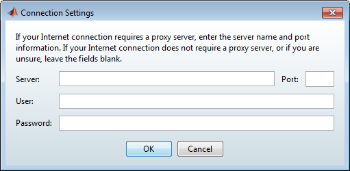

Choose Whether to Install Automatically or Manually
Choose whether you want to install using a MathWorks® account or a File Installation Key. If you are connected to the Internet, leave the Log in with a MathWorks Account option selected (the default) and click Next. During installation, you log in to your MathWorks Account, select the license you want to install, and follow the prompts on the other installer dialog boxes. Using a MathWorks Account is the easiest way to install.
If you are not connected to the Internet during installation, choose the Use a File Installation Key option and click Next.

Note: On Windows systems, the installer uses your system proxy settings, by default. If you proxy server requires you to log in, the installer prompts you for your login information. |
If your Internet connection requires a proxy server, click Connection Settings. You can enter the server name, port, and password in the Connection Settings dialog box.
